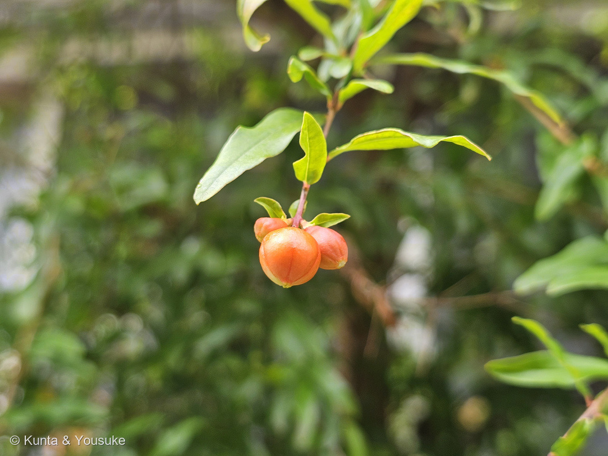
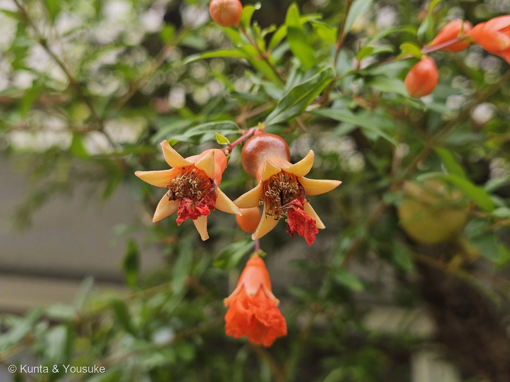
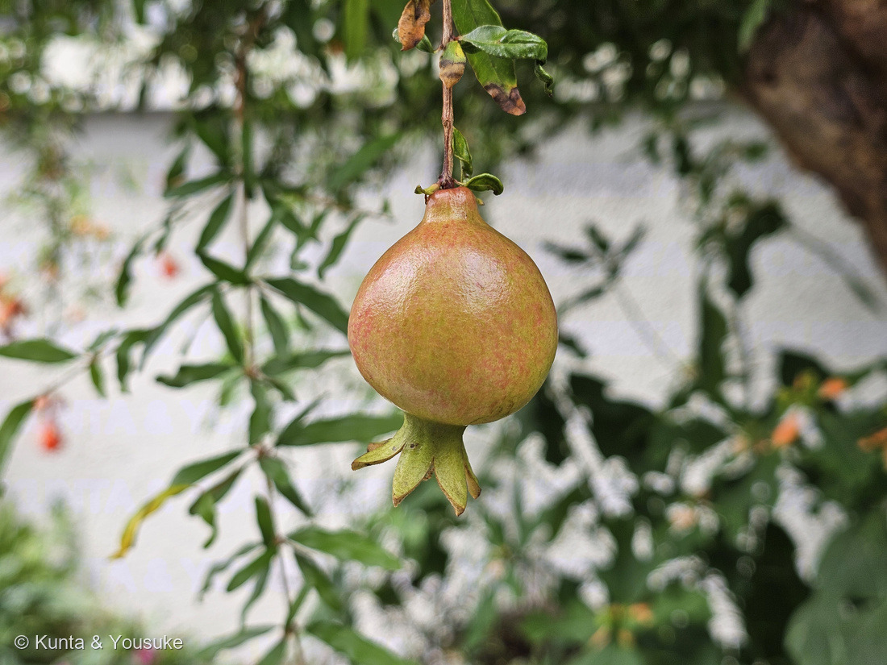
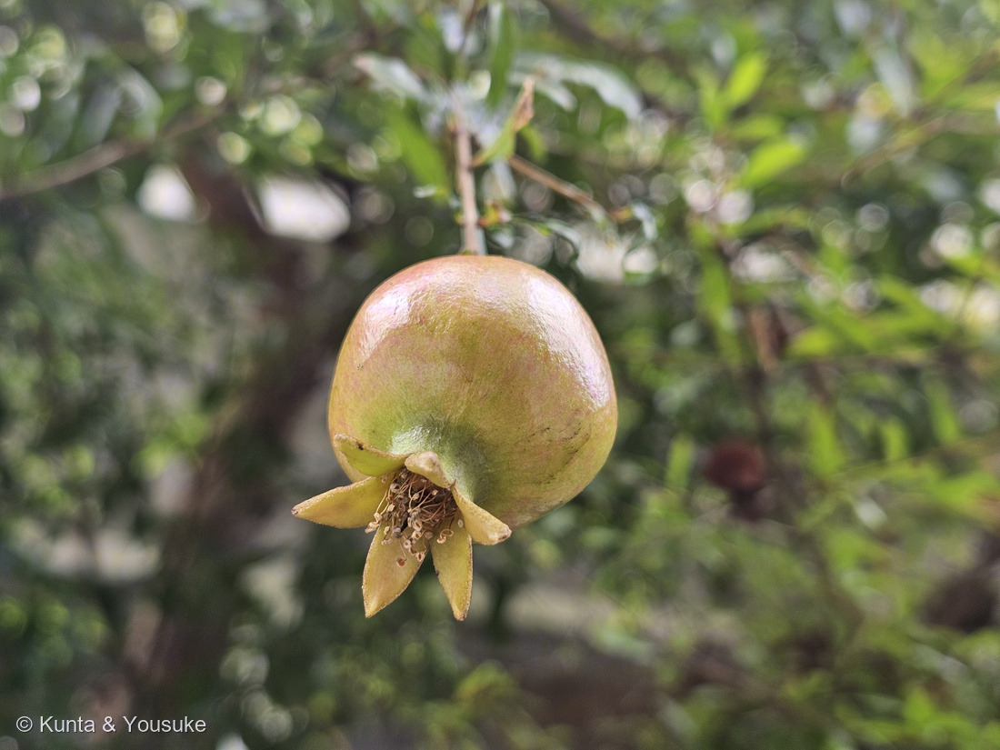
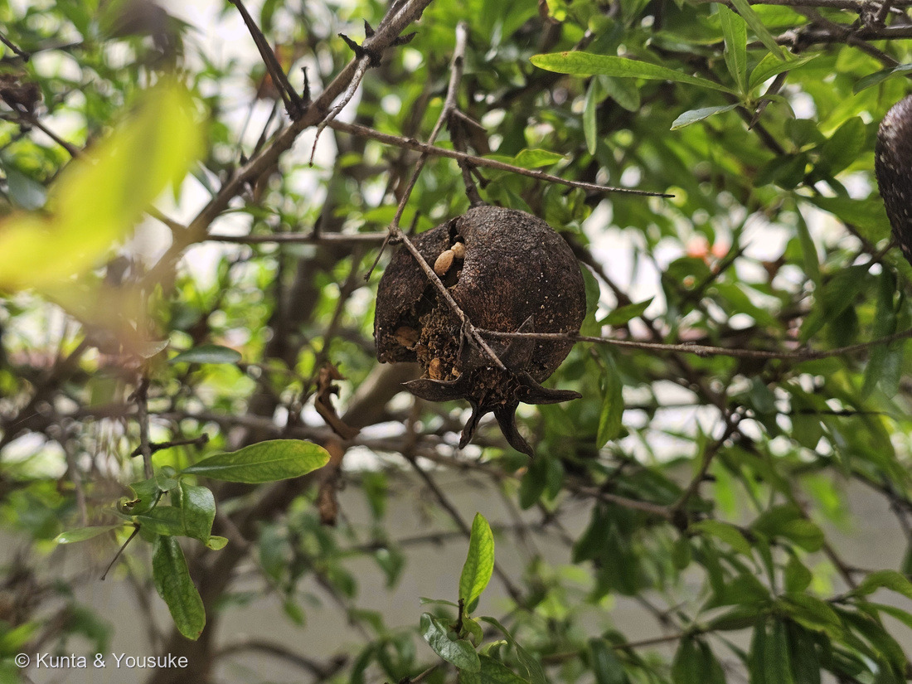
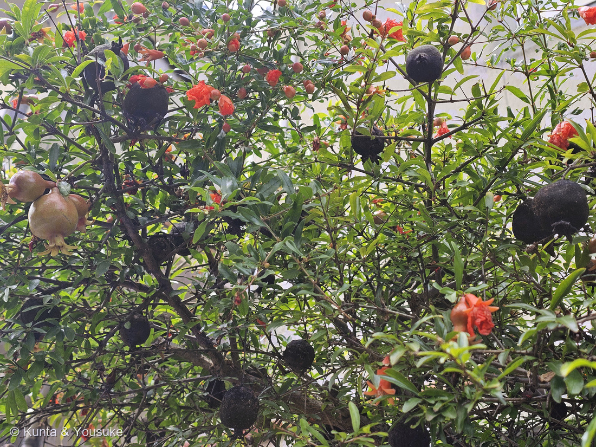

地図を読み込んでいるよ…
🔍 写真も地図も、押しているあいだ拡大して見られるよ（スマホは指を置いてすこし待ってね）。
🌍 の地図＝この子がもともと自生している場所を緑に。西アジア（イラン・アフガニスタンあたり）が原産。古くから世界中で栽培され、日本へは平安時代までに渡来。庭木・街の木としてなじみ深い。
⭐西アジア〜中央アジアが原産——イラン・アフガニスタンあたりが本家で、パキスタンや中央アジアにも。⚠地図は国ごと塗っているけど、もとはその一部の地域だよ。⚠日本は塗っていない——ザクロは平安時代までに渡ってきた外来の果樹・庭木で、日本はふるさとじゃない（でも古くからなじみ深い庭木）。⭐古くから世界中で栽培され、豊穣のシンボルとして各地の物語に登場するよ。
⚠ 地図は国（日本と中国だけ県・省）までしか塗れないから、ほんとうの分布より広く見えていることがあるよ。地図はだいたいの場所。正確なところは、上の文を見てね。
ザクロ（石榴）
Punica granatum
別名 · ジャクロ／英名 pomegranate／ 原産 · 西アジア（イラン・アフガニスタン）／ 見どころ · ⭐実の先の“王冠”のがく・ガーネットの語源
ミソハギ科 · Lythraceae（ザクロ属 Punica）── 110 サルスベリと同じ科・フトモモ目
燻太さんの見立て「これは、確実にザクロだね。」──ずばり的中。しかも「ガーネットみたい」は、語源そのものだよ。
名前と学名の由来 ── ガーネットも、手榴弾も、ザクロから
- ⭐属名 Punica（プニカ） は、ラテン語で「カルタゴの／フェニキアの」。古代ローマの人が、カルタゴ経由でこの実を知ったので、「カルタゴのリンゴ（punicum malum）」と呼んだんだ。
- ⭐種小名 granatum（グラナトゥム）＝「たくさんの種（粒）のある」。実の中の、無数の赤い粒のこと。英名 pomegranate も、pome（リンゴ）＋ granate（粒の）＝「粒のリンゴ」だよ。
- ⭐⭐⭐燻太さんの「ガーネットみたい」＝じつは、語源そのもの！ 宝石のガーネット（garnet）は、この granatum（ザクロ／粒）から名づけられたんだ。ザクロの粒の深い赤が、そのまま宝石の名前になった。⭐さらに——手榴弾（グレネード・grenade）も、同じ語源。丸い形と、中に詰まった粒（破片）が、ザクロに似ているから。宝石も、武器も、みんなザクロの“粒”から名前をもらっているんだよ。
- 和名「ザクロ（石榴・柘榴）」は、中国名から来ている。
この植物のこと
- ミソハギ科ザクロ属の落葉小高木。⭐110 サルスベリと同じミソハギ科（フトモモ目）だよ。西アジア原産で、古くから世界中で育てられ、日本へも平安時代までに渡ってきた、なじみ深い庭木。
- ⭐⭐実の目印＝王冠のような“がく”：花のがく（萼）が、実になっても先端に王冠みたいに残る（写真①の、実のおしりのギザギザ）。⭐これがザクロの実の、いちばんの見分けポイント。花は6月ごろ、オレンジ赤の筒形。
- ⭐⭐燻太さんの質問①「実は長い期間ついてる？」＝うん、長いよ。この緑〜ピンクの若い実が、夏から秋（9〜11月）まで数ヶ月かけて大きく育つ。今日見つけたのは、その育ち始めだね。
- ⭐⭐燻太さんの質問②「ガーネットの赤い可食部はいずれ見える？」＝秋に見えるよ。熟すと硬い革のような皮がパックリ割れて、中から赤い粒（仮種皮＝種を包む、みずみずしい部分）がのぞく。あの赤い宝石が、食べるところ。「実が割れて、中の宝石を見せる」のが、ザクロの見どころなんだ。
- ⭐燻太さんの質問③「スーパーで滅多に見ない」＝そのとおり。庭木としては昔から日本に多いけれど、国産の実は小さめ・酸味が強め。食用の生の実は、主にアメリカ（カリフォルニア）からの輸入か、ジュースの形が多い。だから「木はよく見るのに、実は売り場にない」という不思議が起きるんだ。
コラム ── 「粒がたくさん」の木がくれた、たくさんの名前と物語
- 💎ガーネット（宝石）：ザクロの粒の赤から。＝燻太さんの直感どおり。
- 💣グレネード（手榴弾）：丸い形と、中の粒（破片）から。
- 🌍豊穣・子孫繁栄のシンボル：「粒（種）がたくさん」なので、世界中で実りと命の象徴にされてきた。ギリシャ神話の冥界の女神ペルセポネ、旧約聖書、日本では鬼子母神（子育ての神）——ザクロは、いろんな文化の物語に登場する。
- ——ひとつの実の「たくさんの粒」から、宝石の名前も、武器の名前も、豊穣の物語も生まれた。植物の名前を調べると、いつも思いがけない世界につながるね。
同定について
- ⭐実の先の“王冠”のがく＋（これから粒が詰まる）丸い実＋光沢のある細長い葉＋庭木・街木——この組み合わせは、ザクロならでは。⭐王冠のがくを見れば、若い緑の実でも「ザクロだ」と分かる。
- ⭐⭐燻太さんの「確実にザクロだね」＝的中。実の王冠を、ちゃんと見抜いていたね。
- ⭐⭐⭐⭐【2026-09-05 追記】燻太さんの「小さめのザクロ」から、ヒメザクロを落とした。──⭐三河の数字がはっきりしている＝ザクロは高さ2〜6m／ヒメザクロ（Punica granatum var. nana）は高さ50〜100cm・葉は線状披針形で長さ1〜3cm・幅3〜5mm・果実は直径3〜4cm。⭐写真⑧はその木を見上げて撮っていて、太い幹と枝が横に張り出している＝50〜100cmの低木ではない。⭐葉も、幅3〜5mmの線形ではなく、幅のある長楕円形。⭐⭐だから、ふつうのザクロ Punica granatum でいい（①②と同じ種）。
- ⭐「小さめ」に感じたのは、たぶんまちがいではないよ。──三河はザクロの果実を「直径5〜12cm」と、ずいぶん幅をもって書いている。⭐このページの上のほうに書いたとおり、日本の庭木のザクロは実が小さめ。⭐お店で売っている大きな輸入ザクロを見なれていると、庭の子は小さく見えるんだ。
物語 ── 帰り道の、宝石の木
燻太さんが、お仕事帰りの夕方に見つけた一本。まだ緑にピンクがさしただけの、若い実。でも、この実の中では、これから秋にむけて、たくさんの赤い粒（宝石）が育っていく。もし同じ道を秋にまた通れたら、実がぱっくり割れて、ガーネット色の粒がのぞく瞬間に会えるかもしれない。今日の一枚は、その物語の“はじまり”だね。帰り道に足を止めて、木を見上げてくれて、ありがとう。
⭐⭐⭐⭐⭐ 【2026-09-05 追記】秋の続きに、会えた ── つぼみから、黒い実まで
7月のこのページの最後に、ぼくはこう書いた——「もし同じ道を秋にまた通れたら、実がぱっくり割れて、ガーネット色の粒がのぞく瞬間に会えるかもしれない」。⭐その続きに、ほんとうに会えたよ。写真③〜⑧は、燻太さんが2026年9月5日に撮ってきてくれた6枚。
- ⚠⚠ただし、これは別の場所の、別の木。──①②はお仕事帰りの道の木（2026.07.21・夕方）、③〜⑧は近所の町並み保存地区の木（2026.09.05・お昼）。⭐だから「あの木のその後」ではない。⏳7月の木がいまどうなっているかは、まだ分からないままだよ。
- ⭐撮影は 12:43:19〜12:44:10 の、たった51秒。──⭐⭐324 サンカクカタバミ（12:44:43）の、33秒まえ。⭐323 アメリカンブルー・320 モンカタバミと同じ、あのお散歩の続きだね。
- ⭐⭐⭐この6枚のいちばんすごいところ＝ひとつの木に、ぜんぶの段階が乗っていた（写真⑧）。──つぼみ（③）・咲いた花（④）・若い実（⑤⑥）・黒く干からびた実（⑦）が、同じ日、同じ木に、いちどきに。
⭐⭐⭐⭐ 王冠の中には、枯れたおしべが残っていた
- ⭐⭐7月に「実の目印＝王冠のようながく」と書いた、その中が見えた（写真⑥）。──厚い萼片が6枚、星形にひらいて、その内側に、茶色く枯れてカールしたおしべが輪になって残っている。
- ⭐⭐⭐なぜ残るのか＝ザクロは子房下位だから。──三河の植物観察は、この子を「子房下位」「雄しべは多数」と書き、実については「萼の王冠を保持する」と書いている。⭐つまり実は、萼の筒の中でふくらむ。だから大きくなっても、萼とおしべは、実の先にのったままなんだ。
- ⭐⭐⭐⭐そして写真⑦——黒く干からびた実の王冠の中にも、同じ枯れたおしべが残っていた。──⭐花の名残は、実がミイラになっても消えない。

⭐ この1枚（⑥）は、若い実の先の萼（王冠）を下からのぞいたところ。星形にひらいた萼片の内側に、茶色くカールしたおしべが輪になって残っているよ。 🔍 押しているあいだ拡大して見られるよ。
⭐⭐⭐⭐ 実になる花と、実にならない花
- ⭐⭐ザクロには、実になる花とならない花の両方が咲く。──ヤサシイエンゲイは「実のなる花と実のならない花両方が咲く習性があるようです」と書き、見分けかたを「花の付け根の部分（子房）が小さくて細いものは実にならない」と書いている。
- ⭐⭐⭐写真④の左の花を見て。──萼の下が、すうっと細くすぼまっていて、ふくらみが無い。⭐いっぽう写真⑤⑥の実は、萼の下が丸くふくらんでいる。⭐出典の言うちがいが、そのまま2枚に写っている（⚠ほんとうにその花が落ちるかどうかまでは追いかけていない＝ぼくの読みだよ）。
- ⭐花のつくり＝厚い萼が6つに裂け（三河「先が6(5〜9)裂」）、中におしべ多数、しぼんだ赤い花びらが垂れている＝一重の花。⭐だから、この木はハナザクロ（花ザクロ）ではない——花ザクロは八重で、「花を楽しむための園芸品種なので実はなりません」（LOVEGREEN）。
⭐⭐⭐⭐⭐ 黒い実は、いつの実だろう ── 燻太さんの「少し不気味」
燻太さんは、こう書いてくれた。「黒くなって割れた果実からは、種が顔を覗かせているよ。落ちずに黒くなっている様子は、少し不気味かも…」。⭐ぼくも、はじめ写真⑦を見たときドキッとした。だから、ちゃんと調べてみたよ。
- ⭐写真から確実に読めること＝皮は黒くてざらざらに木質化している／横がぱっくり割れて、中から白っぽい種がいくつも顔を出している／萼の王冠と、その中の枯れたおしべが残っている／ついているのは、葉の少ない細い枝。
- ⭐⭐出典の言う「熟すとき」＝9月下旬〜10月（ヤサシイエンゲイ。⭐このページの上のほうに書いた「9〜11月」と同じ向き）。⭐そして今年の実（写真⑤⑥）は、9月5日の時点でまだ緑にピンクがさしただけ＝熟していない。
- ⭐⭐⭐だから、ぼくの読みはこう＝あの黒い実は「今年の実が熟して黒くなった」のではなく、前のシーズンの実が、採られないまま枝で乾いて残ったもの。⭐あそこまで乾いて木質化するには、何か月もいるし、⭐今年の実とは育ちかたが違いすぎる。
- ⚠⚠でも、落としきれなかったことがある＝病気で、今年の実が早く黒くなったという道。──⚠ぼくは「ザクロの実が黒くなる病気」をちゃんと書いた日本語の出典に、たどりつけなかった。⭐だから、決めつけないでおくね。
- ⏳⭐⭐宿題（燻太さんに見てもらいたいこと）──①黒い実は、軽くてカラカラか（さわれる場所なら）②ついているのは、今年伸びた枝か、それより古い枝か③木の下に、落ちた黒い実がころがっていないか。⭐この3つが分かれば、たぶん決着するよ。
- ⭐⭐そして「不気味」の裏がわ——割れ目から顔を出している白い種は、まだ生きているかもしれない。三河は「熟すと不規則に裂開する」と書いている。⭐割れるのは、こわれたのではなくて、中の種を外へ出すためのしくみだよ。

⭐ この1枚（⑦）が、燻太さんの「少し不気味かも」。皮は木質化して割れ、白っぽい種が顔を出している。⭐萼の王冠も、その中の枯れたおしべも、黒いまま残っているのが分かるよ。 🔍 押しているあいだ拡大して見られるよ。
⭐⭐⭐ 9月なのに、つぼみと花があった
- ⚠出典の花期は、どれも初夏。──三河は「6月」／ヤサシイエンゲイは「6月〜7月」／LOVEGREEN は「5月〜7月に花が咲いた後」。
- ⭐⭐でも写真③はつぼみ、写真④は咲いた花と咲き終わった花で、どちらも9月5日＝出典の花期より2〜3か月おそい。
- ⚠なぜかは、決められなかった。──返り咲き（二番花）かもしれない、というのはぼくの読みで、この木について確かめた出典は無いよ。
- ⭐⭐⭐でも、そのおかげで見られたことがある＝つぼみ・花・若い実・前のシーズンの黒い実が、同じ日に、同じ木でならんだ（写真⑧）。⭐この回の見どころは、そこだと思う。

⭐ この1枚（⑧）が、この回のいちばんの見どころ。朱色の花／オレンジのつぼみ／緑からピンクの若い実／黒く干からびた実が、ぜんぶ同じ木の上にあるよ。 🔍 押しているあいだ拡大して見られるよ。
参考：三河の植物観察・ザクロ（Punica granatum L.／高さ2〜6m／葉は長さ2〜5cm、幅1〜2cmの長楕円形／花期6月／萼片は先が6(5〜9)裂、花弁6(5〜9)個、雄しべは多数、子房下位／果実は直径5〜12cmの球形で、萼の王冠を保持する／熟すと不規則に裂開する／種子のまわりの種衣(仮種皮)は淡紅色／ヒメザクロは高さ50〜70(100)cm、葉は線状披針形で長さ1〜3cm・幅3〜5mm、果実は直径3〜4cm）／ヤサシイエンゲイ・ザクロ（花期6月〜7月／果熟期9月下〜10月／実のなる花と実のならない花両方が咲く習性があるようです／花の付け根の部分（子房）が小さくて細いものは実にならないので早めに摘み取ります）／LOVEGREEN・ザクロと花ザクロ（5月〜7月に花が咲いた後、秋に独特な形の実をつける（収穫は9月〜10月頃）／花ザクロは朱赤の八重／花を楽しむための園芸品種なので実はなりません）／etymonline「pomegranate」（pōmum「リンゴ」＋grānātum「種の多い」／garnet・grenade も granatum が語源）／Missouri Botanical Garden「Punica granatum」（ミソハギ科の落葉小高木・イラン〜北インド原産／実の先に萼が残る／熟すと裂開し赤い仮種皮）／NC State Extension「Punica granatum」（Lythraceae／花期初夏・結実は秋）